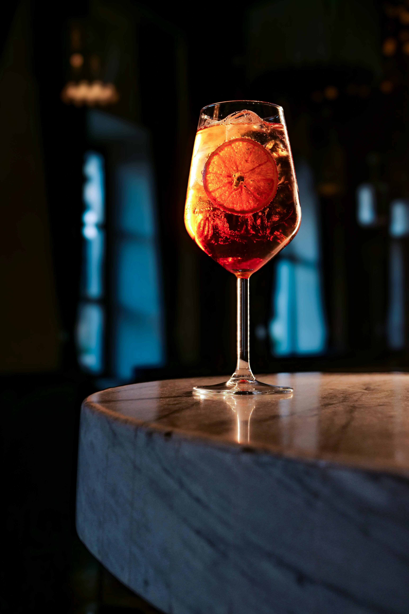
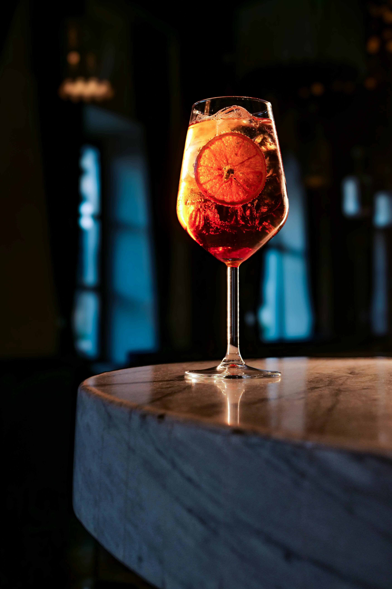

- Vinos Tintos -
El elegido del mes: El Enemigo - Malbec 2016
En nuestra selección mensual, destacamos a 'El Enemigo', un vino argentino de gran porte.
Una expresión sublime del terruño mendocino donde la uva se equilibra y desafia las expectativas.
Este vino, envejecido en barricas de roble francés, despliega un abanico sensorial de frutas negras maduras, ciruelas compotadas, cacao oscuro y sutiles notas violetas y especias ahumadas.
- Maridajes con Nuestros Platos -
Jamón Ibérico de Bellota: La grasa infiltrada se funde perfectamente con la estructura atercipelada y los finos taninos del Malbec, elevando cada bocado a una experiencia sofisticada.
Pulpo a la Gallega: La textura del pulpo y la sutileza del pimentón encuentran un contrapunto ideal en las notas y la acidez del Enemigo.

- Tragos con Alcohol -
El elegido del mes: Averna Amaro - Licor
En nuestra selección mensual de componenetes de tragos elegimos el licor 'Averna Amaro', un destilado que captura el espiritu siciliano en cada sorbo.
Elaborado a partir de una receta centenaria, este amaro se distingue por su complejidad aromática y su excelente equilibrio entre el dulzor y el amargor.
Con notas de hierbas mediterraneas, raíces bótanicas, cascaras de cítricos caramelizadas y un sutil toque especiado, Averna le agrega a los tragos un viaje sensorial refinado.
- Maridajes con Nuestros Platos -
Papas Bravas con Alioli de Ajo Negro: La cremocidad de nuestro alioli y el picante de nuestro pimento iberico encuentra un constraste vibrante en las notas herbales y citricas de Averna.
Crema Catalana con Notas de Romero: La dulzura de la crema y el sutil amargor de este licor se entrelazan y danzan con la complejidad aromatica cerrando la experiencia con elegancia.
- Espumantes -
El elegido del mes: Cinzano Pro Spritz - Espumante Prosecco
Desde el corazón de Italia llega a nuestras cartas este espumante de caracter fresco y ligero.
Este vino espumoso presenta una burbuja fina y persistente que envuelve el paladar con notas de manzana verde, cítricos brillantes y un sutil toque de flores blancas.
Su equilibrio entre acidez vibrante y final seco lo convierte en el aliado perfecto para cocteles sofisticados o solo, para momentos de celebración.
- Maridajes con Nuestros Platos -
Toston de Salmón Ahumado y Crema de Queso: La frescura del espumante equilibra la untuosidad del queso y resalta las notas ahumadas del jamón.
Gaspacho Andaluz: Su acidez y burbujeo aportan frescura y contraste a la textura suave y los sabores intensos del gazpacho.
- Tragos sin Alcohol -
El elegido del mes: Cusenier - Jarábe Granadina
Es mucho más que un simple endulzante; es una invitación a explorar la frescura y el color vibrante de la granada en cocteles sin alcohol que complementan la riqueza de la gastronomia española.
Su delicado equilibrio entre dulzura y acidez lo convierte en el acompañante ideal para realzar sabores y texturas, aportando frescura en cada plato.
- Maridajes con Nuestros Platos -
Tarta de Santiago: Acompaña este clasico pstre gallego con un mocktail de Cusenier y agua con gas, cuya burbuja fina y dulzura afrutada potencian los sabores de la alamendra y el toque cítrico del limón.
Pinchos Morunos de Pollo con Especias: Las especias calidas y jugosidad del pollo se equilibran con un mocktail de Cusenier aportando frescura y un sutil contraste dulce que resalta los matices ahumados de este plato.
- Vinos Blancos -
El elegido del mes: Rutini - Sauvignon Blanc 2019
De los viñedos de altura en el valle de Uco, llega este vino blanco que destaca su pureza aromatica y su vibrante frescura.
Este ejemplar despliega notas intensas de frutas citricas como el pomelo, lima y maracuyá, acompañadas por delicadas pinceladas herbales y un elegante toque mineral que refleja su origen andino.
Su acidez equilibrada y su cuerpo ligero lo convierten en una opcion ideal para maridar con la riqueza de la gastronomia española.
- Maridajes con Nuestros Platos -
Queso Machego Semicurado con Mermelada de Higo: La intensidad frutal y cítrica del vino suaviza la potencia del queso manchego, logrando un maridaje elegante y equilibrado.
Tartar de Langostinos con Cilantro: La frescura del vino potencia la delicadeza del marisco, mientras que las notas herbales complementan el aroma del cilantro.